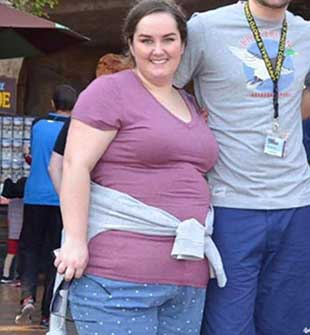

LE HIT DI PRIMAVERA! Abbiamo chiesto alle nostre splendide lettrici dei suggerimenti su come dimagrire
Molte di noi si sentono insicure, riguardo al loro peso. Soprattutto quando dobbiamo mostrare i nostri corpi in abiti estivi e costumi da bagno. A nessuna piacciono i rotolini di grasso e le gambone grosse! Inoltre, gli uomini guardano solo le ragazze sexy e magrissime.
Questo è il momento giusto per mettere da parte paure e insicurezza. Proprio come una delle donne che ha raccontato la sua storia alla nostra redazione. Il racconto che ci ha inviato ci ha letteralmente incantati. Ed è anche molto motivante: leggetelo fino in fondo e siate felici, care! Meritate di essere magre e bellissime!
SPOSAMI IN ABBONDANZA E SALUTE
Ho sempre avuto un'idea precisa di come avrebbe dovuto essere la mia vita. Volevo avere un corpo snello e splendido. Volevo sposarmi e avere un marito amorevole e premuroso. Ma, naturalmente, non è stato così. Pesavo circa 63 kg per 157 cm di altezza. E ho avuto dozzine di fidanzati che non hanno mai voluto sposarmi e che a un certo punto decidevano di non voler uscire con una ragazza che non avesse l'aspetto di una modella.
Per un certo periodo, sono uscita con un ragazzo gentile e premuroso, Antonio. Avevamo un rapporto dolce e romantico. Sembrava essere il compagno ideale per me! Questo è ciò che pensavo di lui, prima di quel terribile giorno. Mi aveva invitato a casa dei suoi per farci conoscere.
Mi ci volle un po' per prepararmi all'incontro, ero nervosissima. A suo padre, Nicola, sembravo piacere, mi chiedeva della mia vita, del lavoro, della famiglia, e così via. Ma sua madre, Cristina, non era così accomodante, mi guardava con disgusto, senza dire nulla.
Poi andai in bagno. E quando tornai, sentii Cristina che diceva al mio dolce Antonio quanto fossi grassa e brutta e che non ero adatta a lui. Quando entrai, ero sull'orlo delle lacrime, ma Antonio non mostro alcuna comprensione, nei miei confronti. Scappai via da quell'orribile casa e non rividi mai più Antonio.
Ero stufa del mio sovrappeso e volevo sbarazzarmi dei chili di troppo disperatamente e ad ogni costo. Mi misi alla ricerca di un bruciagrassi efficace.
Non ho mai frequentato le palestre poiché lavoro come manager e sono sempre di corsa. E non sono sempre in buona salute, per cui avevo bisogno di un rimedio naturale e sicuro.
Alla fine, sono riuscita a trovare l'unico prodotto sicuro, semplice e noto in cui mi sia imbattuta: . Il caffè mi piace, mentre odio lo sport. Così ho abbandonato le bibite gassate che adoravo per . Ho perso 3 kg in una settimana! Dopo 2 settimane, -7 kg! Ovviamente, non mi nego il buon cibo.

Ho iniziato a sentirmi molto meglio e ad apparire in forma! Ho incontrato un ragazzo di nome Stefano. Lui è l'uomo perfetto, per me, stavolta per davvero! Mi ama molto, così come la sua famiglia e i suoi amici. E oggi sono una donna felice, snella e amata!
Stefano mi ha chiesto di sposarlo quattro mesi fa. Una situazione assurda. E tre giorni fa, ci siamo sposati! Non avrei mai pensato di poter vivere in questo modo: con l'uomo ideale, dolce, gentile, forte e allo stesso tempo sensibile che mi è accanto e che ama me e il mio corpo sottile.
ha trasformato il mio sogno in realtà!
Loredana non è stata l'unica donna a menzionare nelle lettere pervenute alla nostra redazione. Nella nostra casella postale, ce ne sono tonnellate. Quindi abbiamo deciso di condividerle con voi!
Anche il nostro staff ha testato questo integratore alimentare dimagrante. Se volete fare lo stesso e dimagrire facilmente e velocemente, cliccate qui per maggiori dettagli.